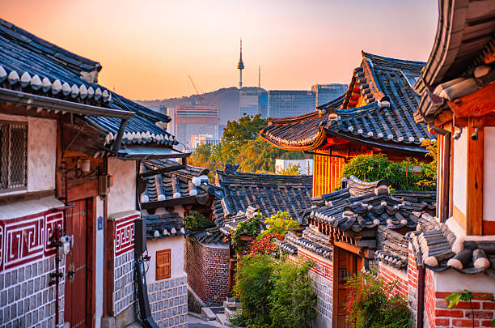
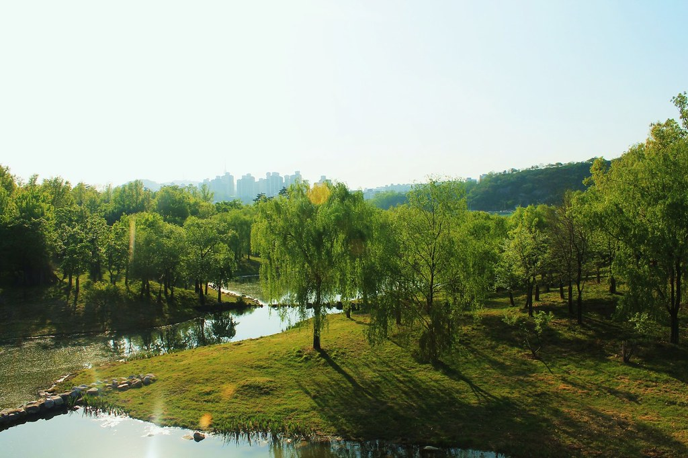
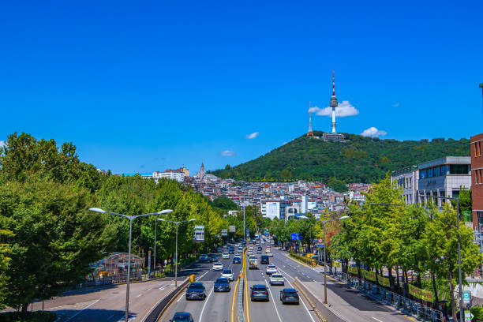
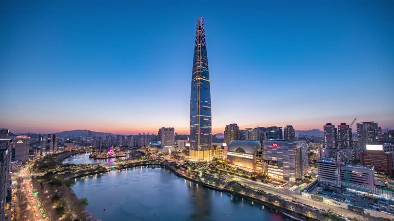

These are the routes I recommend most often to friends visiting Seoul. Each itinerary groups together nearby places that are easy to explore on foot or by a short subway ride. You can always adjust the route based on your schedule, and for more restaurants, cafes, and hidden gems, check out my Google Maps list and the Explore Seoul section.

My favorite area in Seoul! Wander through traditional hanok streets, enjoy panoramic city views, and explore one of the city's best neighborhoods for cafes, modern Korean restaurants, and galleries. The palace stone-wall roads also make for a relaxing walk.
A great route if you're interested in Seoul's history. Walk between two royal palaces, then continue to Cheonggyecheon, where many locals enjoy takeaway food while strolling in the evening. If you have extra time, head west into Seochon for excellent cafes and restaurants.
A reenactment of the Joseon Dynasty royal guard ceremony, featuring traditional uniforms, weapons, and military rituals from the 15th century. (10:00 & 14:00, 20 min)

Seongsu is one of Seoul's trendiest neighborhoods, known for pop-up stores, cafes, and creative brands. If the weather is nice, I highly recommend walking through Seoul Forest before exploring Seongsu. Most visitors take Line 2 to Seongsu Station directly; the Suin–Bundang Line is a good option if you'd like to start from Seoul Forest.

The National Museum of Korea is one of the country's largest museums and a great introduction to Korean history and culture. Afterwards, explore the rapidly growing Sinyongsan area for food and cafes, or continue to the War Memorial. You'll also get some beautiful views of Namsan Tower along the way.

Perfect for hot or rainy days. Lotte World Tower offers shopping, food, and indoor attractions, while nearby Seokchon Lake is great for a walk. Finish in Songridan-gil for cafes and restaurants, or hop on Line 2 to Gangnam.